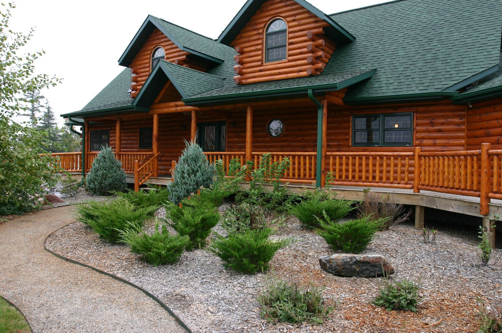

Дом из дикого сруба
Строительство деревянных домов зародилось несколько тысячелетий назад. С каждым веком мастерство мастеров росла тем самым и улучшалась технология строительства и комфортность самых деревянных домов. В настоящее время строительство деревянных домов не потеряло своей актуальности и находится в тренде тех людей, которые ценят подлинность и красоту. Кроме того, такие дома напоминают нам о вековых традициях и объединяют нас с природой.
Типы деревянных домов и их вид.
Тип дома зависит от вкусов владельца, а также влияет на комфортность, цену и другие факторы. Наиболее распространенными типами деревянных домов являются:
- Каркасные дома
- Брусовые
- Рубленые дома из дикого сруба
- Дома из оцилиндрованного бревна
Не менее важным элементом в деревянных домов является их внешний вид. Наибольший эстетичности, естественности внешнем виде задает тип дома из дикого сруба. Именно выбор дома из дикого сруба - это удачная идея, чтобы начать строительство охотничьих домов, загородных домов, бань, беседок, дачного дома и даже городского - частного дома.
Преимущества строительства дикого сруба с нашей компанией «Карпатский сруб:
- Безопасность - наши мастера заботятся прежде всего за безопасность хозяев. Поэтому можете спать спокойно и не беспокоиться, что с вашим домом что-то случится.
- Цена - наши решения являются одними из самыми низкими на рынке, а сэкономленные средства пригодятся Вам в оформленные вашего личного интерьера в новом деревянном доме изготовленного из дикого сруба.
- Скорость - благодаря ответственность и професианализму наших мастеров, строительство проекта является быстрым процессом.
- Экологичность - материалы, которые мы используем соответствуют всем экологическим нормам.
Материал, который мы используем в основном это сосна, которая обеспечивает экологичность и эксплуатационную устойчивость здания. Кроме того, возможно использование такого материала, как ель, европейская лиственница, и тому подобное.

Цены на дом.
Одной из наших преимуществ является невысокая цена. Так, цены для каждого клиента индивидуальны и зависят от многих критериев, поэтому Вашу персональную цену Вы можете узнать от нас по телефону или по электронной почте. Наша компания осуществляет строительство деревянных домов в Ужгороде, Мукачево, Межгорье, Хусте, Сваляве, Львове, Ивано-Франковске, Берегово, Иршаве и в других уголках Украины.